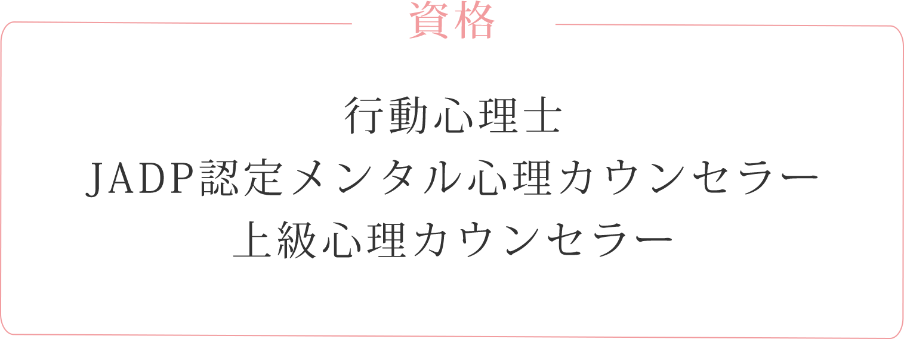
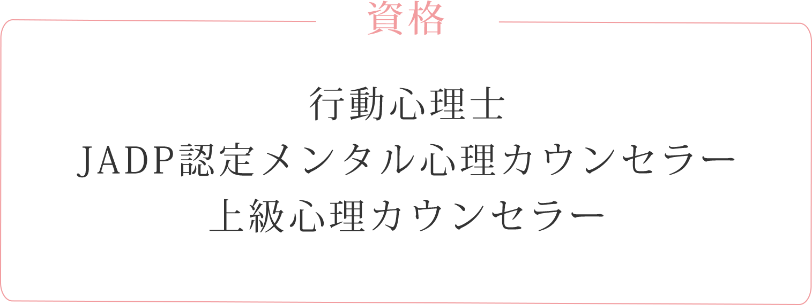

1992年生まれ、京都府出身。
精一杯、頑張って、頑張ってやっとの思いで就職した会社が、体育会系激務のうえ、三交代勤務で地獄。仕事がつらくてどうしようもないときにHSPと出会い、転職しました。今は自分の「好き」を追求中。
生きづらさを抱えながらも、それでも頑張って生きている方とつながりたくてこの場所を作りました。趣味は、水族館巡り。動物と植物、刺繍が好きです。
経歴
- ・大阪大学大学院卒業、生物学について学ぶ
- ・2017年に大手食品企業に総合職で入社し、製造と品質管理を経験
- ・2019年に退職し、大学事務に転職
 
